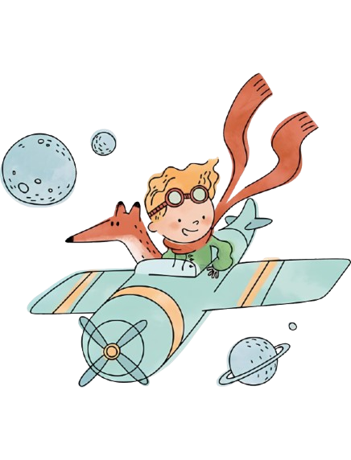
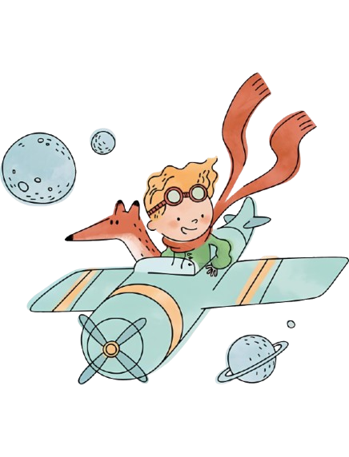

Uma criança adormecida
O livro O Pequeno Príncipe nasceu das mãos de Antoine de Saint-Exupéry. E, assim como em tantas de suas histórias, nele
o escritor se coloca dentro da narrativa: o piloto não é outro senão ele mesmo. O piloto é o símbolo daquele que ousa
sonhar e, mesmo em meio às tempestades, não desiste de voar. Na infância, foi um menino de imaginação sem limites —
aquele que desenhou uma jiboia engolindo um elefante. Esse menino era Saint-Exupéry, antes que o mundo adulto lhe
cobrisse os olhos com números, mapas e obrigações.
Com o passar do tempo, ele deixou seus desenhos de lado, mergulhou nos estudos de matemática, geografia e biologia, e
transformou-se em mais um adulto sério, como tantos outros. Mas o destino, em sua poesia discreta, o levou de volta ao
deserto. E foi ali, diante da imensidão silenciosa da areia, que surgiu o Pequeno Príncipe. Esse encontro não foi apenas
parte da história: foi também a metáfora do reencontro do escritor consigo mesmo, com a criança que havia silenciado. Ao
ouvir o menino de cabelos dourados, Saint-Exupéry voltou a reconhecer o valor da ternura, da simplicidade e do olhar
encantado — lembrando-se de que, apesar do peso dos anos, a infância ainda pode ser reencontrada dentro de cada coração.
O menino pediu-lhe um carneiro. O piloto, já afastado da pureza da infância e preso às lógicas do mundo adulto, tentou
satisfazer o pedido com desenhos comuns, rígidos, sem encanto. Foram figuras exatas, mas vazias, incapazes de tocar a
imaginação. Até que, cansado, rabiscou apenas uma caixa, sem detalhes, quase como quem desiste.
E foi nesse gesto simples, quase involuntário, que o Pequeno Príncipe revelou a verdadeira riqueza: dentro daquela caixa
morava o carneirinho invisível, perfeito aos seus olhos inocentes. O que para o piloto parecia vazio e incompleto, para
a criança era cheio de vida, de possibilidades, de sonhos.
Então o piloto compreendeu. Percebeu que, com o tempo, havia se tornado um adulto comum, fechado em medidas e regras,
incapaz de ver além do visível. Mas ao lado do Pequeno Príncipe, redescobriu lentamente a magia esquecida — aquela
capacidade de olhar o mundo com ternura, de dar sentido ao que não se pode tocar, de ouvir as estrelas como se fossem
canções.
Não voltou a ser a criança que fora, mas reencontrou, em parte, o coração que havia adormecido. Aprendeu que o essencial
nunca esteve nos traços perfeitos de um desenho, mas no espaço aberto para a imaginação, na confiança de acreditar que
uma simples caixa podia conter o universo inteiro. E assim recordou, como quem desperta de um longo sono, que só se vê
com clareza quando se permite enxergar com os olhos da alma.
 
